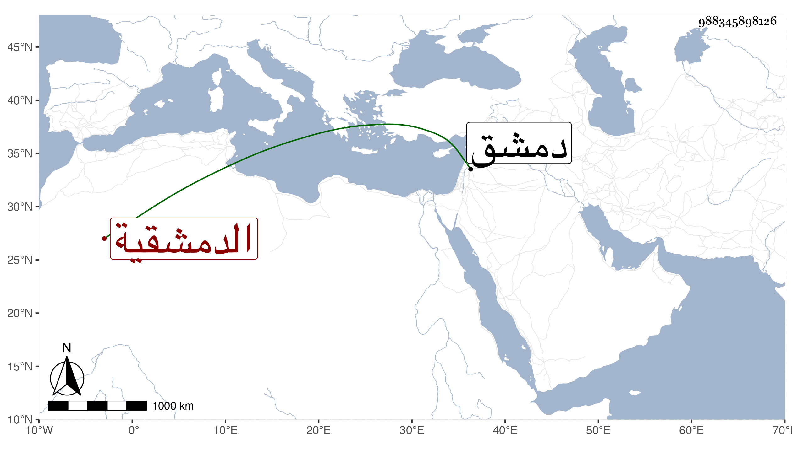

0902Sakhawi.DawLamic.ITO20230111-ara1.EIS1600.988345898126
Biography ID: 988345898126
6
آسية ابنة محمد بن إبراهيم الدمشقية أخت إبراهيم الماضي ويعرف كسلفه بابن المعتمد ، ولدت سنة اثنتين وخمسين وسمعت معنا بدمشق مع أخيها على جدتها ست القضاة ابنة ابن زريق وتزوجها ابن التركماني فمات عنها ثم آخر ثم ابن عم لابن البانياسي شيخ زاوية ابن داود وهي الآن في سنة ست وتسعين باقية وكان لها أخت ماتت تحت الشهاب بن اللبودي .
